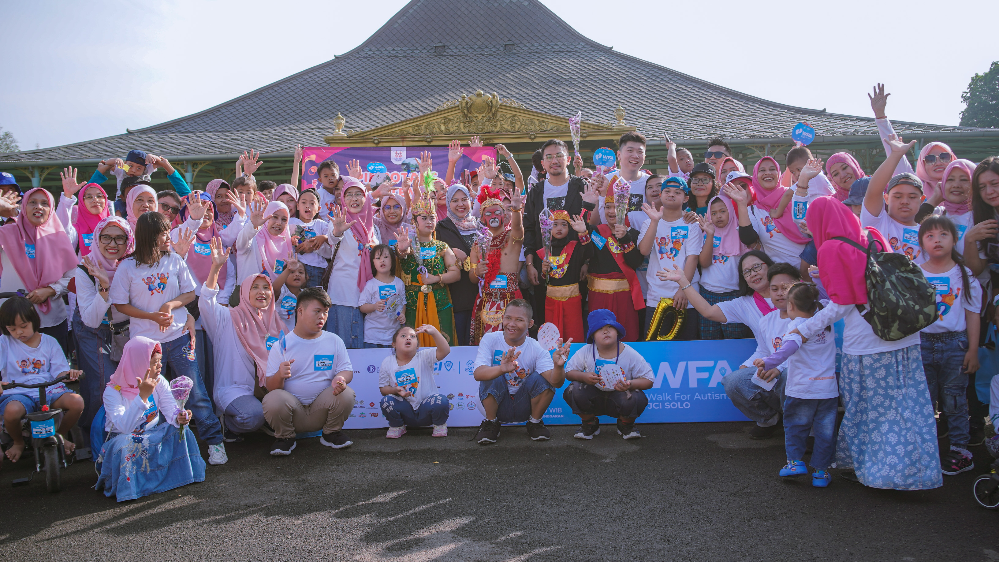

PIK POTADS Jawa Tengah adalah komunitas tempat keluarga dengan anak Down
Syndrome saling bertemu, berbagi, dan tumbuh bersama. Kami percaya bahwa setiap
anak memiliki potensi luar biasa yang layak didukung dengan sepenuh hati. Dengan
semangat “Aku Ada Aku Bisa,” kami hadir untuk menemani setiap langkah keluarga
dalam perjalanan yang penuh harapan dan kebahagiaan.
Komunitas ini bermula dari sekelompok orang tua di Solo Raya yang ingin mencari dukungan, informasi, dan tempat bercerita tentang tumbuh kembang anak mereka. Dari obrolan kecil, lahirlah komunitas yang terus berkembang, hingga akhirnya pada tahun 2019 resmi menjadi bagian dari Yayasan POTADS Indonesia dan membangun jaringan di seluruh Jawa Tengah. Kini, PIK POTADS Jawa Tengah memiliki ratusan anggota dari berbagai kota dan kabupaten.
Aku Ada Aku Bisa
Kami percaya setiap anak memiliki keunikan dan kekuatan masing-masing. Bersama, kita bisa mendampingi mereka untuk berkembang, berkarya, dan bahagia.
Logo PIK POTADS menggambarkan tiga kromosom nomor 21 yang membentuk siluet anak-anak sedang menari dengan riang. Bentuk ini melambangkan Down Syndrome, keceriaan, dan kebersamaan dalam komunitas. Warna biru dan merah menunjukkan semangat, kekuatan, dan kasih sayang yang selalu menyertai perjalanan anak-anak dan keluarga.
POTADS memiliki visi menjadi pusat informasi dan konsultasi terlengkap tentang down syndrome di Indonesia, serta menjadi pusat informasi yang juga memberikan pendampingan, dan membangun komunitas bagi keluarga dengan anak Down Syndrome di Jawa Tengah yang selalu mengedepankan semangat kebersamaan dan harapan.
Untuk mencapai visi tersebut, kami memiliki misi yaitu menyediakan pusat informasi yang dapat diakses 24 jam melalui berbagai media seperti surat, telepon, internet, dan saluran komunikasi lainnya. Kami berkomitmen menyajikan informasi terkini baik dari sisi ilmiah maupun pengalaman langsung para orang tua, serta memberikan data yang dibutuhkan oleh keluarga dalam mengakses layanan seperti rumah sakit, klinik, puskesmas, dan posyandu.